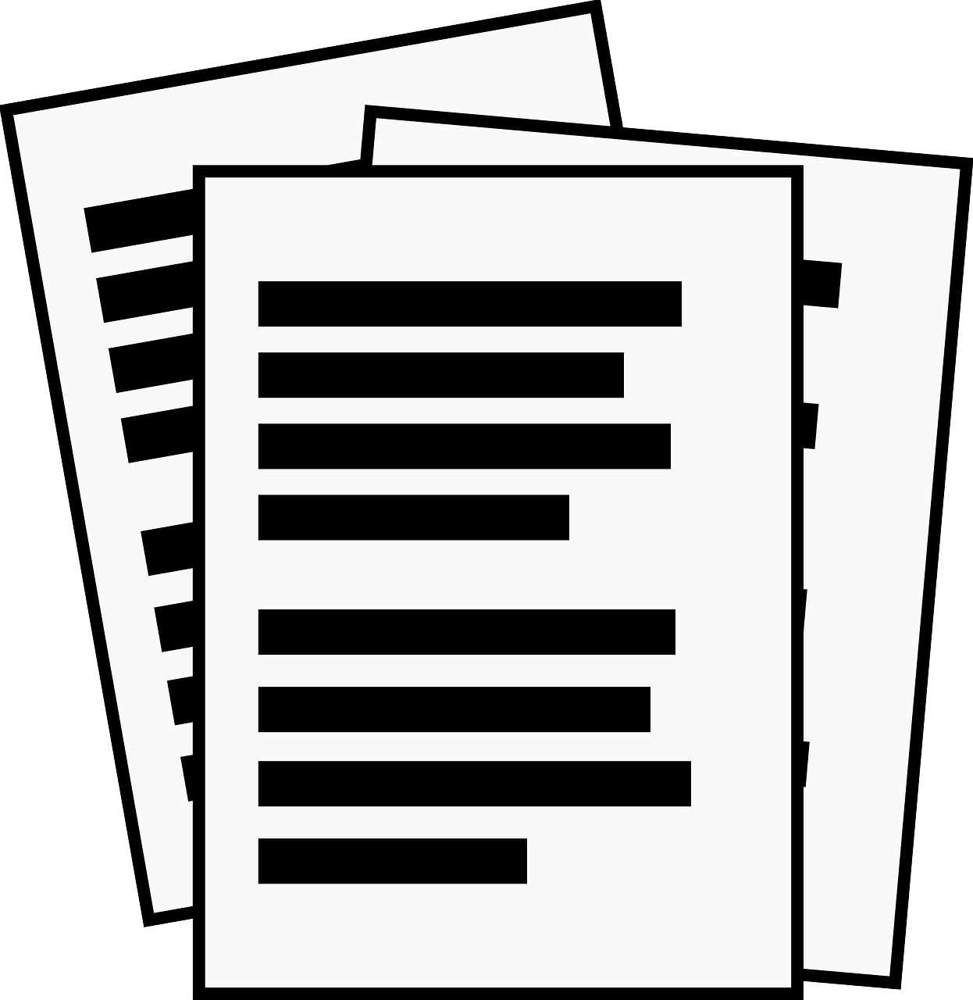

Additional Labs
Additional labs include Dynamics, Mechanics, and Measurnment Labs. These include additional experience with a variety of technical devices and software including MATLAB, circutry, and sensors. These labs illustrate my abilty to quickly learn new engineering skills and curiosity beyond the required learning.
Goals
-
Dynamics Lab
- Primarily Focused on 4 Bar Linkages
- MATLAB coding the dynamic system
- SolidWorks modeling of the linkages.
-
Mechanics Lab
- Experiemented with a variety of mechanic principles (i.e. Stress, Torsion, Tension).
- Analyzed materials and with various devices
- Written reports to illustrate findings
-
Measurements Lab
- Tested a variety of measuring devices in different scenarios
- Built different circut layouts
- Written report after each lab
Tools & Skills Used
 New Skills
New Skills
 MATLAB
MATLAB
 Lab tech
Lab tech

Technical Writing